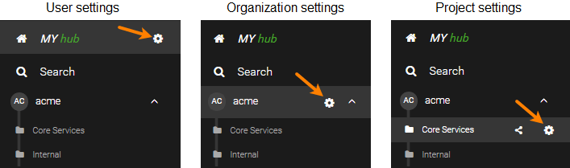

SwaggerHub On-Premise Release Notes
Note
Looking for SwaggerHub SaaS release notes? See here.
This page contains a list of new features and other changes introduced with each release of SwaggerHub On-Premise.
1.x customers, learn about:
2.x customers, learn about:
How to upgrade 2.x instances
Latest version (fully supported)
The latest release is described below. If you are still running a 1.x release click on the 1.x tab for the latest updates. If you don't know how to determine your current version, click here.
SwaggerHub Integration for Confluence macro - November 22, 2022
Note
For our support policy regarding previous versions, click here.
Previous Versions
2.4.0 +118 - November 18, 2022
Support for creation of API Custom Templates
Support for Enhanced Search
AsyncAPI:
Support for AsyncAPI domains
Option to export resolved JSON/YAML added for AsyncAPI definitions
Configurable Usage Data Collection option for product improvement insights
Support for Diagnostic/Preflight Checks on Database, Integrations, Certificates, LDAP, SMTP and Web Proxy configuration
The minimum required KOTS version is now 1.85.0. Customers who use an earlier version of KOTS must update the KOTS CLI and Admin Console before upgrading SwaggerHub On-Premise.
Component Updates:
OpenSSL patches for CVE-2022-3602, CVE-2022-3786 see - Software Quality - SmartBear Software
Updated versions of Swagger-editor (4.4.4), Swagger-ui (4.15.0), Swagger-editor-next (5.0.0-alpha.27);
SwaggerHub plugin aligned to new version Intellij IDEA 2022.3;
Updated Swagger-Generator-V3 to 3.0.35;
Updated Swagger Core to v. 2.2.2 for OpenAPI 3.0
2.3.0 +111 - August 22, 2022
AsyncAPI support added
2.2.0+106 - June 15, 2022
Installation changes:
All containers now run as a non-root user.
It is no longer required to enable the
anyuidSCC on OpenShift.Option to install on OpenShift clusters for users who only have permissions on a single namespace.
For embedded installations, the minumum CPU requirements has been reduced from 8 vCPUs to 4 vCPUs.
SwaggerHub changes:
Enable/Disable request validation on API auto-mocking.
Improved error messaging when resolved YAML or JSON cannot be generated.
New supported regions in AWS integrations: ap-southeast-3 and ap-northeast-3.
Updated Swagger UI to v. 4.11.0.
Updated Swagger Editor to v. 4.2.7.
Updated Swagger Client to v. 3.18.5.
Updated Swagger Core to v. 2.2.0 for OpenAPI 3.0 and v. 1.6.6 for OpenAPI 2.0.
2.1.1+102 - May 19, 2022
The Spring Framework security patch is bundled with this release, which addresses CVE-2022-22965.
While this CVE does not affect SwaggerHub, we're making it available for security compliance purposes.
2.1.0+102 - May 3, 2022
Changes in clustered installations:
Support for OpenShift 4.x clusters. A separate install guide has been added.
The Ingress Class name can be specified in the KOTS configuration. This adds support for clusters with multiple Ingress controllers or clusters with no default Ingress class configured.
Changes in VM-based installations:
TLS termination can now be configured for the SwaggerHub application.
Other:
Migration from 1.x -> 2.x is now supported from 1.20.1+ backups.
Added a new configuration option to configure trusted certs in LDAP authentication.
Added support for any Ingress Controller. Previously only NGINX and Contour controllers were supported.
Improved error reporting for
create-admin-userwhen the password does not meet the password requirements.Version numbers can now include the plus character (+) for compatibility with Semantic Versioning. The new version format is supported when creating versions in the SwaggerHub web applications as well as via CLI, VS Code extension, IntelliJ IDEA add-on, and Registry API.
SwaggerHub mock server now honors
nullvalues in response and schema examples used in OpenAPI 3.0 definitions. Previously,nullexamples were ignored and not included in mock responses.UX improvement: Links in the SwaggerHub navigation menu and sidebar can now be right-clicked and opened in a new tab or window.
Updated Swagger Editor to v. 4.1.2, which includes a new validation check for schema properties defined with both
readOnly: trueandwriteOnly: true.Updated Swagger UI to v. 4.5.2.
Updated Swagger Codegen to v. 3.0.33 for OpenAPI 3.0 and v. 2.4.26 for OpenAPI 2.0.
2.0.1+98 - March 16, 2022
Changes in clustered installations:
The minimum required KOTS version is now 1.65.0. Customers who use an earlier version of KOTS must update the KOTS CLI and Admin Console before upgrading SwaggerHub On-Premise.
Changes in VM-based installations:
The container runtime for the embedded cluster has been changed from Docker to containerd to improve performance.
2.0.0+98 - February 22, 2022
SwaggerHub On-Premise 2.0.0 is a major release that features containerized installation, external database support, new Admin Console, and a number of usability improvements.
Containerized installation
SwaggerHub On-Premise 2.0 is packaged as a containerized application that can be deployed to an existing Kubernetes cluster, including cloud platforms such as Amazon Elastic Kubernetes Service (EKS), Google Kubernetes Engine (GKE), and Azure Kubernetes Service (AKS).
Customers who prefer VM-based installation have an option to install SwaggerHub with an embedded cluster on a VM of choice (Ubuntu, RHEL, Amazon Linux, and others).
Both options support online and airgapped (offline) installation. The installation is powered by Replicated KOTS.
The new deployment options give you more control over the SwaggerHub deployment environment in terms of provisioning, configuring, securing, and upgrading the underlying cluster and operating system.
For details, see the clustered installation guide and VM installation guide.
External database support
SwaggerHub On-Premise uses MongoDB and PostgreSQL to store data. This release adds an option to use external MongoDB and PostgreSQL instances for improved resiliency and scalability. You can choose between internal and external databases during the SwaggerHub installation.
Note: When using external databases, you are responsible for backing up, maintaining, and securing your databases.
See the requirements for external databases.
New Admin Console
Version 2.0.0 comes with a new Admin Console provided by Replicated KOTS. Besides the configuration interface, the Admin Console provides:
Velero integration for backup and restore via full or partial snapshots. You can create snapshots, configure scheduled snapshots, and set up the snapshot storage location directly from the Admin Console.
Prometheus integration for monitoring key system metrics.
Streamlined application updates. You can configure automatic update checks, see SwaggerHub release notifications directly in the Admin Console, and install updates with just a few clicks. Airgapped (offline) installations can be updated just as easily by uploading the new airgap bundle to the Admin Console. Updates can also be installed from the command line.
Learn more about the new Admin Console.
Other improvements and changes
New supported regions in AWS integrations: eu-south-1 and af-south-1. These regions can also be used when creating integrations by using SwaggerHub CLI and Registry API.
Usernames and the names of organizations, projects, APIs, domains, and versions can now contain multiple consecutive special characters. For example, multiple underscores
__.The user profile menu has been updated and now contains direct links to account settings, organizations list, and SwaggerHub API key.
Improved the display of the versions list in the editor in case of a large number of versions.
Updated Swagger UI to v. 4.0.4 and Swagger Editor to v. 4.0.3.
Updated Swagger Codegen to v. 3.0.31 for OpenAPI 3.0 and v. 2.4.25 for OpenAPI 2.0.
Removed the obsolete
scala-gatlingcode generator.The SwaggerHub On-Premise full version number format was changed from x.y.z-nn to x.y.z+nn, that is, with a plus (+) instead of a hyphen (-). The new version format is compatible with semantic versioning.
Configuration changes
As a result of the new deployment methods, some configuration settings were removed or replaced with alternatives. For details, see Differences Between SwaggerHub On-Premise 1.x and 2.x.
Upgrade notes
SwaggerHub On-Premise 2.0 must be a new installation. There is a migration path for existing 1.x instances to transfer your data to the new 2.0 installation.
Note: Some features of 1.x are currently not supported in 2.0 yet. For details, see Differences Between SwaggerHub On-Premise 1.x and 2.x.
1.29.2-89 - March 2, 2022
This is a patch release for 1.x VM installations that updates the bundled dependencies: Elasticsearch to v. 7.16.3 and VirtServer to v. 3.10.0. These updated dependencies include Apache Log4j v. 2.17.1, which addresses CVE-2021-44832 and CVE-2021-45105.
1.29.1-89 - December 18, 2021
This release is bundled with the Log4j security patch. This is the only change in this release compared to 1.29.0.
Installation and upgrade notes:
On AWS and Azure platforms, SwaggerHub On-Premise 1.29.1 is available both as a new installation and as an upgrade to existing instances.
Note
Customers who rehydrate their instances should upgrade to 1.29.1 and rehydrate using this version.
VMware and VirtualBox users can get the 1.29.1 release only as an upgrade to existing instances.
Customers who use version 1.29.0 with the Log4j patch applied can skip this update as its the same as the patch.
Security patch for Apache Log4j issues CVE-2021-44228 (Log4Shell) and CVE-2021-45046
Updated on February 28, 2022
We have released SwaggerHub On-Premise 1.29.2 and 2.0.0 with Log4j updated to v. 2.17.1.
Updated on December 16, 2021
An updated security patch is available for SwaggerHub On-Premise versions 1.29, 1.28, and 1.27 that addresses the recently disclosed vulnerabilities in the Apache Log4j library, CVE-2021-44228 (Log4Shell) and CVE-2021-45046. This patch supersedes the previous patch published on December 13.
While SwaggerHub On-Premise does not use Log4j directly, this library is used by the bundled Elasticsearch and VirtServer components. The patch updates these components to the versions that provide mitigations for the mentioned CVEs. Specifically, Elasticsearch is updated to version 7.16.1, and VirtServer is updated to use Log4j version 2.16.0.
Customers running SwaggerHub On-Premise 1.26 and earlier versions must upgrade to at least v. 1.27 in order to apply this patch (as per our End-of-Support Policy).
Download the patch (740 MB):
https://onprem-files.s3.amazonaws.com/log4j-patch.enc
The patch is standalone, so it can be installed on offline instances too.
Steps to apply the patch:
Upload and run the patch on the System tab of the Admin Center, as explained here.
Note: Since the patch file size is large, it will take a few minutes to upload to the Admin Center, and a few more minutes to execute. If you have a load balancer in front of your SwaggerHub On-Premise instance, you may need to increase the load balancer timeout so that the file upload does not time out.
Wait for the following output to appear:
****************************************************************** The patch for CVE-2021-44228 and CVE-2021-45046 has been applied. Please restart SwaggerHub to apply the changes. ******************************************************************
Restart SwaggerHub for the changes to take effect.
To verify the mitigation, check the component versions on the System Status page of the Admin Center. The version of
swaggerhub_SWAGGERHUB-VIRTSERVER_1should be 3.8.1, and the version ofswaggerhub_ELASTIC-SEARCH_1should be 7.16.1.
Note
This patch does not change the SwaggerHub version number.
1.29.0-89 - September 29, 2021
Important
Note: The direct upgrade to SwaggerHub On-Premise 1.29 is possible from v. 1.28 and v. 1.27 instances. Upgrading from earlier versions requires an intermediate upgrade to v. 1.27 and migration to Ubuntu 20. Refer to the upgrade guide for details.
Offline upgrade improvements
Previously, the offline upgrade required a web server in the local network to host the upgrade images. Going forward, offline upgrade can be done by copying the upgrade bundle directly to the SwaggerHub VM and changing the Software Update URL to
file:///path/to/swaggerhub-offline-images.zip.
User Management API improvements
New operations to help admins and organization owners manage users:
PATCH /orgs/{orgId}/members- Change the organization role for one or more members:curl -X PATCH http(s)://SERVER/api/user-management/v1/orgs/ORG_NAME/members \ -H 'Authorization: API_KEY' \ -H 'Content-Type: application/json' \ -d '{"members": [ \ { "email": "bob@example.com", "role": "DESIGNER" }, \ { "email": "amy@example.com", "role": "OWNER" } \ ]}'DELETE /orgs/{orgId}/members- Delete one or more users from an organization. The user accounts remain in the system.curl -X DELETE "http(s)://SERVER/api/user-management/v1/orgs/ORG_NAME/members?user=bob@example.com&user=amy@example.com" -H "Authorization: API_KEY"
DELETE /users- Delete one or more user accounts from SwaggerHub On-Premise (requires the admins API key):curl -X DELETE "http(s)://SERVER/api/user-management/v1/users?user=bob@example.com&user=amy@example.com" -H "Authorization: ADMIN_API_KEY"
Get the last activity date of organization members. The response from
GET /orgs/{orgId}/membersincludes a newlastActiveproperty that contains the date and time of the last activity of organization members. Tracked activities include logins and changes made to data.The updated OpenAPI definition for the User Management API can be found here:
http(s)://SERVER/api/user-management/v1/swagger.yaml - the YAML version
http(s)://SERVER/api/user-management/v1/swagger.json - the JSON version
Registry API now uses OpenAPI 3.0
The Registry API definition is now available in the OpenAPI 3.0 format. It can be found here:
http(s)://SERVER/v1/openapi.yaml - the YAML version
http(s)://SERVER/v1/openapi.json - the JSON version
The OpenAPI 2.0 version is still available but is considered deprecated.
http(s)://SERVER/v1/swagger.yaml
http(s)://SERVER/v1/swagger.json
Going forward, new operations will be added to the OpenAPI 3.0 version only.
Organization improvements
Organization invitations sent to unregistered users now expire after 90 days if the user has not signed up within that period. Invitees whose invitation has expired are automatically removed from the organizations member list, but you can invite them again.
Some organization-related pages have been redesigned to improve the user experience.
The My Organizations page now displays the email addresses of all organization owners along with the "send email" buttons. You can also navigate to the organizations API catalog by clicking View APIs & Domains.
The Organization Overview page now displays the current number of Designers, Consumers, APIs, and Domains in the organization.
Other changes
Updated Swagger UI to v. 3.52.0, which supports file uploading for binary request bodies in OpenAPI 3.0 definitions.
Updated Swagger Editor to v. 3.18.1.
Updated Swagger Codegen to v. 3.0.27 for OpenAPI 3.0 and 2.4.21 for OpenAPI 2.0.
1.28.0-83 - July 9, 2021
Important
Important upgrade note: Direct upgrade to v. 1.28 is only available for v. 1.27 instances running Ubuntu 20. Customers running earlier versions of SwaggerHub On-Premise must first upgrade to v. 1.27 (including migration to Ubuntu 20) and then upgrade to v. 1.28. Refer to the upgrade guide for details.
User Management API improvements
Inviting users to organizations via API. Use the new
POST /orgs/ORG_NAME/membersoperation to invite one or more email addresses and, optionally, set the user roles in the organization (default is Consumer). The request must be authenticated using the API key of the admin user or organization owner. The admin can invite users to any organization in the system.curl -X POST http(s)://SERVER/api/user-management/v1/orgs/ORG_NAME/members \ -H 'Authorization: YOUR_API_KEY' \ -H 'Content-Type: application/json' \ -d '{"members": [ \ { "email": "bob@example.com", "role": "CONSUMER" }, \ { "email": "amy@example.com", "role": "DESIGNER" } \ ]}'The updated OpenAPI definition for the User Management API can be found here:
http(s)://SERVER/api/user-management/v1/swagger.yaml - YAML version
http(s)://SERVER/api/user-management/v1/swagger.json - JSON version
Configuration improvements
New SAML options. The Admin Center includes new options to configure the maximum clock skew and verify the audience in SAML assertions during single sign-on.
Improved logging for better troubleshooting:
Added logging for custom standardization rules.
Added more details for source control integration errors.
The upgrade log now also includes information about successful upgrades.
Improved error messages when testing connections using the Test Proxy button.
Organization improvements
The new Team Admin role allows organizations to delegate team management to specific team members. Team admins can add and remove team members, promote others to team admins, or delete the team.
Each team can have none or some admins among the Designers in that team. Team admins can view and manage only those teams where they have admin rights, while organization owners can manage all teams.
Note
Having the Team Admin role does not change any other permissions outside of the team or in relation to the organizations APIs.
The new audit log event - UPDATE_TEAM_MEMBER - is recorded when the Team Admin role is added to or removed from a team member.
Enforce private visibility for organization-owned APIs. Organizations on Enterprise plans have a new option, . If this option is disabled, all new APIs, domains, and versions in this organization will be created as private, and only organization owners can make them public.
Note
This option does not change the visibility of existing APIs and domains.
Invited users are now added to the organization immediately without having to accept the invitation.
To reflect this change, the Joined column on the organization members page has been renamed to Confirmed. Unconfirmed users are those who have not created an account in SwaggerHub yet.
Email notifications sent to newly added organization members now include the username of the person who added those users.
The Team Members page now also displays the email addresses and organization roles of the team members. The email addresses are only visible to organization owners and Team Admins.
When adding organization members to a team, you can now look up users by their email addresses in addition to usernames.
The organization settings button () is now always displayed to organization owners and team admins in My Hub sidebar. Previously, this button was displayed upon hovering over the organization name.
Login and account improvements
Login via email. When internal authentication is used, users can now log in using email addresses as an alternative to the username.
Unlinking from GitHub. Users who signed up via GitHub or have their SwaggerHub account linked to GitHub can now unlink the GitHub account.
The Account Overview page in user settings has been redesigned to improve the user experience.
Improved error messages in case of SAML authentication issues.
Editor and Interactive Docs improvements
Integrity checks for OpenAPI 3.0 domain references. For example, you will now get a warning when trying to publish an API that references unpublished domains. Similarly, youll get a warning when making an API public if it references private domains. Previously, these checks were performed for OpenAPI 2.0 domains only.
More cURL examples. Interactive API docs now generate cURL command examples not only for Bash but also for PowerShell and Windows CMD.
Updated Swagger UI to v. 3.49.0 and Swagger Editor to v. 3.16.2.
Other improvements
Increased catalog page size. My Hub, organization catalog pages, and search results now show 25 items per page instead of 10 items.
The help menu now displays the version number of your SwaggerHub On-Premise instance. Also, weve added the Give Feedback link that the logged in users can use to sign up for SwaggerHub UX research.
Bundled help pages have been removed and replaced with links to the online documentation so that you can get the most up-to-date information.
SwaggerHub pages will now load faster as a result of optimizations in resource loading.
End-of-support policy
To help ensure that our customers are running versions of SwaggerHub On-Premise that we can most-thoroughly support, we are introducing a new End-of-Support Policy. This isnt likely to impact you as long as you upgrade to the most recent, most secure versions regularly.
1.27.0-76 - April 12, 2021
Important
Important upgrade note: For existing customers, this release is delivered with both Ubuntu 16 and Ubuntu 20, along with a migration path from Ubuntu 16 to 20. Customers are expected to complete the full upgrade including migration to Ubuntu 20. Ubuntu 16-based instances of SwaggerHub On-Premise 1.27 are not eligible for technical support. Future releases will be delivered with Ubuntu 20 only.
System enhancements
Ubuntu 20. The underlying operating system has been updated to Ubuntu 20.04 LTS, which is the latest long-term support release.
CIS hardening. SwaggerHub On-Premise images for all platforms have been hardened according to the "Level 1 - Server" profile of "CIS Ubuntu Linux 20.04 LTS Benchmark v1.0.0". The CIS (Center for Internet Security) Benchmarks are best practices for the secure configuration of systems. The benchmark is available from the CIS website. The SwaggerHub On-Premise CIS assessment report is available upon request from SmartBear Support.
Updated Node.js to v. 14.16.0 LTS.
Updated MongoDB to v. 4.4.
Configuration improvements
New SAML options. The SAML configuration in the Admin Center includes new options to configure the authentication context for SAML requests during single sign-on:
See SAML 2.0 Settings for more information about these options.
User lockout after failed logins. After five failed login attempts, the user account becomes locked for five minutes. This helps protect against brute-force attacks.
Enhanced search
Full-text search. SwaggerHub On-Premise now searches the entire YAML contents of API definitions and domains. For example, you can search for definitions that contain specific paths, parameters, or schemas.
Search using boolean operators. You can combine the search terms using AND, OR, NOT. For example, upload OR submit will find definitions containing either word.
New Best Match sorting shows the search results ranked by relevance. This is now the default sort order for search results.
See Searching SwaggerHub for more information.
Overall improvements
OpenAPI 3.0 support in the Amazon API Gateway Lambda Sync integration.
Custom standardization rules can now be deleted.
Catalog pages and the editor now display long API names and domain names in full.
Code generation improvements
New server generators for Java:
OpenAPI 3.0: jaxrs-cxf, jaxrs-spec
OpenAPI 2.0: java-pkmst
Updated Swagger Codegen to v. 3.0.25 for OpenAPI 3.0 and v. 2.4.19 for OpenAPI 2.0.
Editor and Interactive Docs improvements
Interactive API docs now remember the selected server after page refresh.
Updated Swagger UI to v. 3.45.0, which includes the following improvements:
Support for the OpenID Connect Discovery (OIDC) security scheme.
Generating examples for YAML media types.
Grouping and sorting parameters by location (
inattribute).
Updated Swagger Editor to v 3.15.9.
Registry API improvements
New operations to manage integrations:
Get all integrations configured for a specific API version.
Get integration settings.
Update integration settings.
Run an integration.
Delete an integration.
New operations to fork APIs and domains.
Breaking change: The response of
GET /projectshas been updated to use the sameProjectobject as other project-related operations.Operations that download API definitions have a new
flattenparameter that affects the structure of resolved YAML and JSON. Flattening replaces all inline complex schemas with named entries in thecomponents/schemasordefinitionssection.POST /apis/{owner}/{api}andPOST /domains/{owner}/{domain}now detect the OpenAPI version (3.0 or 2.0) of uploaded files automatically. Previously, OpenAPI 3.0 uploads required the use of the?oas=3.0.0query parameter - this is no longer needed. Theoasparameter has been removed and is now ignored.
The updated OpenAPI definition for the Registry API can be found here:
http(s)://SERVER/v1/swagger.yaml - YAML version
http(s)://SERVER/v1/swagger.json - JSON version
CLI compatibility
This release adds support for the following commands of SwaggerHub CLI:
swaggerhub domain:createswaggerhub integration:listswaggerhub integration:executeswaggerhub integration:getswaggerhub integration:updateswaggerhub integration:delete
1.26.0-68 - December 18, 2020
Important
Important: To upgrade to v. 1.26, you must be running v. 1.22.0-38 or later. If you use an earlier version, contact your sales representative for assistance with the upgrade process.
New User Management API
This release includes a new API to get all organizations and their members.
Get organizations:
GET http(s)://SERVER/api/user-management/v1/orgs Authorization: YOUR_API_KEY
Get organization members:
GET http(s)://SERVER/api/user-management/v1/orgs/ORG_NAME/members Authorization: YOUR_API_KEY
OpenAPI definition for this API can be found at:
http(s)://SERVER/api/user-management/v1/swagger.yaml - YAML version http(s)://SERVER/api/user-management/v1/swagger.json - JSON version
Admin Center improvements
The License page now displays Designer seat limits in addition to total user seats.
Integration improvements
Pulling API definitions from source control. If you store your OpenAPI definitions in a Git repository, you can now pull them from the repository into SwaggerHub. To be able to do this, you need to configure a source control integration in SwaggerHub with the target file set to an unresolved YAML or JSON definition. This integration will allow bi-directional synchronization (both push and pull) between SwaggerHub and the Git repository. For details, see Syncing API Definitions Between Source Control and SwaggerHub.
API mocks and webhooks are now carried over when you create a new version of an API.
Azure API Management integration has the new option to set the base path of your API gateway in Azure, such as https://{instance}.azure-api.net/myApi.
Registry API improvements
New operations:
create and manage projects in organizations,
get API standardization errors,
add integrations to APIs,
get and set the visibility (public or private) of APIs and domains,
create new versions of APIs and domains,
rename APIs and domains,
read, add, and manage comments.
The
sortparameter of search operations supports a new value, TITLE.The
versionparameter of the "create or update a domain" operation (POST /domains/{owner}/{domain}) is now optional. This aligns with the corresponding API-specific operation (POST /apis/{owner}/{api}).The following operations have been deprecated in favor of the new commenting operations:
GET /apis/{owner}/{api}/{version}/.comment GET /domains/{owner}/{domain}/{version}/.commentRegistry API now validates request bodies sent with POST, PUT, and PATCH requests to make sure they conform to the OpenAPI definition. This includes making sure that the required fields are present, all values have the correct data types, and so on. As a result, requests that previously worked without required fields in the body will no longer work and will need to be updated.
The updated OpenAPI definition for the Registry API can be found at:
http(s)://SERVER/v1/swagger.yaml - YAML version http(s)://SERVER/v1/swagger.json - JSON version
CLI compatibility
This release adds support for the following commands of SwaggerHub CLI:
swaggerhub api:validate- get API standardization errorsswaggerhub integration:create- add integrations to an APIswaggerhub api:update --visibility=public|private- change API visibility
Catalog improvements
My Hub, organization and project pages, and the search page have been improved:
Catalog pages now have the "delete" button so that you can quickly delete APIs and domains you no longer need.
APIs and domains can be sorted by their title (
info.title).Designers and consumers can see their role in the header of organization catalog pages.
Editor improvements
This release comes with Swagger Editor v. 3.14.6, which includes new syntax validations:
Check for path parameters that are defined in the parameters list but not included in the path itself (for example, if a path is defined as
/usersinstead of/users/{id}).Validate component names in OpenAPI 3.0 definitions. Component names can contain only
A-Z a-z 0-9 - . _Validate that a schemas
defaultvalue is present in theenum.Validate schemas in the
components/schemassection in OpenAPI 3.0 definitions.Validate that
min*values are less than or equal to the correspondingmax*values in OpenAPI 3.0 definitions.Validate that OpenAPI 3.0 parameter references, header references, and requestBody schema references point to the correct component types.
Improved syntax validation for domains.
The Export > Download API > YAML Resolved and JSON Resolved commands now download the actual YAML or JSON file instead of a ZIP archive.
Code generation improvements
New code generators:
Go and TypeScript Fetch clients for OpenAPI 3.0.
C++ (Pistache, Restbed) servers for OpenAPI 2.0.
Updated Swagger Codegen to v. 3.0.23 for OpenAPI 3.0 and v. 2.4.17 for OpenAPI 2.0.
Interactive Docs improvements
New option for "try it out" requests: . This option becomes available when routing requests via browser and corresponds to Swagger UIs
withCredentialsoption. Set this option based on how CORS is configured on the API server:Enable this option if the API server sends back the origin header, such as
Access-Control-Allow-Origin: https://your.swaggerhub.server.com.Disable this option if the API server sends the
Access-Control-Allow-Origin: *response header.Note
If this option is disabled, CORS requests will not include browser cookies or the
Authorizationheader.
This release comes with Swagger UI v. 3.36.2, which includes the following improvements:
Syntax highlighting in request bodies, response bodies, and cURL commands.
An option to send or omit optional form fields with empty values. (OpenAPI 3.0)
Validate the presence of required form fields before sending requests. (OpenAPI 3.0)
A button to copy the "try it out" response body to the clipboard.
"Try it out" support for uploading array of files in
multipart/*requests in OpenAPI 3.0 definitions.Display the
nullable,maxProperties, andminPropertiesattributes for object schemas.
Operation parameters now display the
pattern,min*, andmax*attributes.API docs now also display vendor extensions (
x-fields) in operations, parameters, schemas, and responses.
1.25.1-56 - September 4, 2020
Updated Node.js to v. 12.18.3 LTS.
Updated Nginx to v. 1.18.0.
Fixed the TOKEN_TYPE_INVALID error when deleting organization-owned APIs via SwaggerHub Registry API.
1.25.0-56 - July 23, 2020
Overall improvements
Pushing to source control has become easier. SwaggerHub Editor now provides the Push button to trigger source control integrations, which works separately from the Save action. This way, you can save the API definition changes incrementally and only push to the source control repository when ready to do so.
You can also provide a custom commit message when pushing the changes.
Note
Non-source control integrations API Auto Mocking and Webhooks are still triggered on save.
Registry API improvements
Download resolved API definitions by adding the
?resolved=truequery parameter to the URL of the YAML/JSON file.Resolved YAML:
http(s)://SERVER/v1/apis/OWNER/API_NAME/VERSION/swagger.yaml?resolved=true
Resolved JSON:
http(s)://SERVER/v1/apis/OWNER/API_NAME/VERSION?resolved=true or http(s)://SERVER/v1/apis/OWNER/API_NAME/VERSION/swagger.json?resolved=true
Code Editor improvements
This release comes with Swagger Editor v. 3.9.0, which includes new syntax checks:
Warnings about OpenAPI 3.0 header parameters named
Authorization,Content-Type,Accept. The warning messages explain how these headers should be defined instead:The
Authorizationheader should be defined as a security scheme, that is, using thesecuritySchemesandsecuritykeywords.Content-Typeis defined using request body media typesrequestBody.content.<media-type>.Acceptis defined as response media typesresponses.<code>.content.<media-type>.
Warnings about unused security schemes that is, OAS2
securityDefinitionsand OAS3securitySchemesthat are not used insecurity.Error messages if an arrays
minItemsattribute value is greater thanmaxItems.Schema validation for OpenAPI 3.0 response components in the
components/responsessection.
Visual Editor improvements
You can add new schemas (models) by clicking the + button next to the schema list in the Navigation panel:
You can delete operations and schemas from the Navigation panel.
Interactive Docs improvements
This release comes with Swagger UI v. 3.25.4, which includes the following improvements:
Display parameter
formatin OpenAPI 3.0 definitions.Support for Basic authentication with an empty password.
Code generation improvements
New Rust server generator for OpenAPI 2.0.
Configuration changes
SwaggerHub On-Premise collects usage data and sends it to SmartBear to help us improve the product. If you wish to opt out, clear the Send usage data check box during installation or later in Admin Center.
The option has been removed. Instead, use the Certificate Manager and the option to manage trusted SSL certificates.
1.24.0-52 - May 11, 2020
Configuration improvements:
View users last login date. The user list on the License page of the Admin Center now includes the last login date for each user so that administrators can identify inactive users. The last login date is also included in the exported CSV report.
Overall improvements:
Commenting permissions for Consumers. Organizations have the new option to give Consumers and Designers permissions to comment on all of the organizations APIs and Domains. This allows Consumers to offer feedback on the API design and ask implementation questions as they consume the API.
Improved search. You can now search definitions by partial string match and regular expressions. See Searching SwaggerHub for details.
Support for OpenAPI 3.0.3. You can now import API definitions that use
openapi: 3.0.3.Improved browser tab titles for various SwaggerHub pages. The titles now better indicate what is in each tab, making it easier to work with multiple SwaggerHub pages open at the same time.
Admin Center colors were updated to match the main SwaggerHub application.
Updated dialog box styles.
Integration improvements:
Source control integrations are now carried over when you create a new version of an API. The branch for the copied integrations will be set to
swaggerhub-<API-name>-<version>. You can change the branch name later if you want.The Basic Sync mode of source control integrations now allows custom branch names.
AWS Lambda integration now supports newer versions of Node.js and Python. You can choose from:
Node.js 12
Node.js 10
Python 3.8
Python 3.7
Python 3.6
Python 2.7
Note
Node.js 4.3 was removed because it is no longer supported by Lambda. If you used this version, you will need to update your integrations to a newer version of Node.js.
New supported regions in AWS integrations:
ap-east-1,me-south-1.
Code generation improvements:
New Swift 5 client code generator for OpenAPI 3.0.
Updated Swagger Codegen to v. 3.0.19 for OpenAPI 3.0 and v. 2.4.13 for OpenAPI 2.0.
Registry API improvements:
New Registry API operations to get and set the default version, publish and unpublish versions, get the published status.
Editor and Interactive Docs improvements:
Updated Swagger Editor to v. 3.8.0, which adds a new validation for "enum values should conform to their schemas type".
Updated Swagger UI to v. 3.25.0, which adds support for the x-tokenName extension in OpenAPI 3.0 definitions.
1.23.1-46 - March 30, 2020
Revised the Terms of Use.
Fixed support for customized codegen options.
1.23.0-46 - January 31, 2020
New features and improvements:
Custom standardization rules. Organization owners can add custom rules to validate API definitions for compliance with the companys design guidelines.
Extended Designer permissions:
Designers can transfer APIs and domains to organizations where they have Create permissions.
Designers can add APIs and domains to projects.
See who created an API or domain. The API/domain Info panel now shows the username of the person who created the current version of the API or domain.
Note
The created by information is only available for API and domain versions created in SwaggerHub On-Premise 1.23.
New Project option in Create, Import, Fork, and Save As dialogs allows adding newly created definitions to an existing project.
The Transfer Ownership command in the editor was replaced with Manage Owner & Project which also allows adding definitions to projects.
Catalog pages and the Info panel now also display the title (
info.title) of APIs and domains.New search keywords,
standardization:criticalandstandardization:warning, let you find APIs with standardization errors and warnings, respectively.Updated application colors.
Code generation improvements:
New code generators for OpenAPI 3.0:
Node.js server
Go server
Python client
New Swift 5.x client generator for OpenAPI 2.0.
Updated Swagger Codegen to v. 3.0.14 for OpenAPI 3.0 and v. 2.4.10 for OpenAPI 2.0.
Editor and Interactive Documentation improvements:
The Navigation panel in Code Editor is now resizable.
Updated Swagger Editor to v. 3.7.1, which improves OpenAPI syntax validation:
Added a check for mismatching letter case in path parameter names and the corresponding path segments (for example, if the path is
/users/{ID}, but the parameter name isid).Improved the warning about sibling keywords alongside
$refto suggest possible solutions.
Updated Swagger UI to v. 3.24.3.
1.22.0-38 - October 16, 2019
Important
Important upgrade notes
Before upgrading your SwaggerHub On-Premise instance, make sure to run the following maintenance scripts. These scripts need to be run on the System page of the Admin Center, as explained here.
If upgrading from v. 1.21.0-34 (this specific version) to 1.22.0-38:
https://s3.amazonaws.com/onprem-files/1.21_to_1.22_pre_upgrade.enc
Upon completion, this script will restart the system. Please wait for the restart to complete before you proceed with the actual upgrade.
Configuration improvements:
You can add custom Terms & Conditions that the users will need to accept before they can create a SwaggerHub account or log in.
Improvements to the download process for backups and diagnostic data.
The
saml:Issuervalue in SwaggerHubs SAML requests has been changed from swaggerhub tohttp(s)://your_swaggerhub_domain/login/callback for better compatibility with SAML identity providers.
Note
This change applies only to new installations of v. 1.22.0 and does not affect the actual single sign-on functionality.
Editor and Interactive Docs improvements:
Support for multiple examples in parameters, request bodies, and responses in OpenAPI 3.0 definitions and domains.
OpenAPI 3.0 parameters with
contentare now displayed and can be used in "try it out".Support for permalinks to API models. API model permalinks have the
#/MODEL_NAMEformat, for example:https://swaggerhub.mycompany.com/apis/orgname/apiname/1.0.0#/User
Code Editor and Visual Editor now remember their editor and UI panel sizes independently.
Updated Swagger Editor to v. 3.6.36, which improves validation of tag uniqueness.
Updated Swagger UI to v. 3.23.11.
Other improvements:
The SwaggerHub sidebar now provides quick access to user settings, organization settings, and project settings via the button:
Updated Swagger Codegen to v. 3.0.11 for OpenAPI 3.0 and v. 2.4.8 for OpenAPI 2.0.
1.21.0-34 - August 22, 2019
Code generation improvements:
New OpenAPI 3.0 code generators: ASP.NET Core server, C# client, Python Flask server.
The code generator has been updated to Swagger Codegen v. 3.0.10 for OpenAPI 3.0 and v. 2.4.7 for OpenAPI 2.0.
Editor and Interactive Docs improvements:
Visual Editor now lets you edit API servers and server variables in OpenAPI 3.0 definitions.
$refautocompletion now shows all domains (from all organizations and owners) that the current user has access to.Support for OpenAPI 3.0.2: you can import API definitions that use
openapi: 3.0.2.The "Try it out" timeout has been increased to 30 seconds for requests routed via the SwaggerHub proxy.
Integration improvements:
OpenAPI 3.0 support in Apigee Edge integration.
Support for multiple Bitbucket Servers. Default Bitbucket Server can be specified in the Admin Center and can be overridden at the integration level.
Bitbucket integration has been split into Bitbucket Cloud Sync for bitbucket.org and Bitbucket Server Sync for self-hosted Bitbucket Servers. Existing integrations will continue to work, but we recommend that the users migrate to the new Bitbucket integrations.
Azure API Management integration can now be authorized via Azure AD. The new approach replaces previously used
SharedAccessSignaturetokens that had to be re-generated manually every 30 days.Important
Existing integrations in OpenAPI 2.0 APIs need to be updated manually by clicking the Sign in with Microsoft button in the integration settings. Old tokens will continue to work until they expire.
Support for auto-provisioning GitLab integration via the SwaggerHub Maven plugin.
Organization improvements:
Organization members can see the list of organization owners on the My Organizations screen.
1.20.1-31 - July 9, 2019
Enhanced security when using HTTPS with SSL termination directly on the SwaggerHub On-Premise instance:
HTTP Strict Transport Security (HSTS) support. When HTTPS is enabled, SwaggerHub On-Premise sends the HSTS header in all responses. This tells the browsers that your SwaggerHub On-Premise instance must always be accessed by using
https://even if a user enters the address withhttp://or without the protocol.Transport Layer Security (TLS) 1.2 is now required for all clients that connect to SwaggerHub On-Premise, Registry API, or API mocks over HTTPS. Less secure versions TLS 1.0 and 1.1 are no longer supported. To ensure uninterrupted usage, verify that:
All SwaggerHub users use TLS 1.2-compatible web browsers. TLS 1.2 is supported by the latest versions of all major browsers (see caniuse.com).
Applications that connect to SwaggerHub On-Premise (such as API clients, CI/CD tools) support TLS 1.2.
Configuration improvements:
Single sign-on setup has been improved to automatically migrate the existing user accounts to single sign-on. Previously, the admin had to run a maintenance script to migrate the users to single sign-on.
New features and improvements:
Visual Editor now lets you manage tags and edit tag metadata.
Swagger Editor has been updated to v. 3.6.30, which improves syntax error reporting.
Swagger UI has been updated to v. 3.22.3.
1.20.0-28 - May 23, 2019
Configuration improvements:
Support for anonymous LDAP bind.
A new option to disable sign-ups for internal authentication, so that users can join by invite only.
New options to specify the default target server and the default organization for Azure DevOps integrations.
New options to specify the Azure client ID and secret for authenticating the Azure API Management integration.
A new Port option to specify the port on which SwaggerHub is externally accessible (if it differs from the default ports 80 and 443). This is used in scenarios with custom port forwarding.
Editor and Interactive Docs improvements:
Visual Editor lets you easily update your API information, operation metadata, and schema descriptions without having to remember the corresponding OpenAPI YAML markup. You can switch between the Code Editor and Visual Editor by using the sidebar buttons in the SwaggerHub editor.
Docs Branding. Organization owners can upload a logo that will be used in consumer-facing documentation. This custom logo will be displayed in all API docs and domain docs of the organization.
Domains display additional OpenAPI 3.0 components: request bodies, headers, examples, links, and callbacks.
Lazy loading of external $refs. SwaggerHub editor and interactive documentation can now lazily load external $refs such as domain references. Lazy loading can be enabled or disabled in the Admin Center. When it is enabled, external $refs are loaded only when they are required to render a specific operation, for example, when a user expands an operation in API docs. This reduces the API load time and improves the performance.
Note
Lazy loading affects the way domain errors are surfaced in the API editor. Learn more.
Interactive Docs have a new option to ignore SSL certificate errors for "try it out" requests routed via the SwaggerHub proxy. This allows sending requests to servers that use self-signed SSL certificates. The option can be found at the bottom of the Interactive Docs in the SwaggerHub editor.
Updated Swagger Editor to v. 3.6.26, which improves autocompletion for OAS3 schema components.
Updated Swagger UI to v. 3.22.1, which includes the following improvements:
Support for the GFM table syntax in OpenAPI 3.0 descriptions.
Support for
application/x-www-form-urlencodedrequest bodies without explicitly-defined fields.
Integration improvements:
Integration with Azure DevOps Services (formerly Visual Studio Team Services, or VSTS). Use this integration to push your API definition or the generated client/server code to a specific Git repository in Azure DevOps Services. The default Azure DevOps organization for integration can be specified in the Admin Center.
The TFS Sync integration has been renamed to Azure DevOps Server, and now it also supports OpenAPI 3.0.
OpenAPI 3.0 support in the Azure API Management integration. Note: To use the integration for OpenAPI 3.0 definitions, you will need to register an application in Azure that will be used to authenticate requests from SwaggerHub to Azure. For details, see Configuring Azure API Management Integration.
The Bitbucket integration now supports project-owned repositories in Bitbucket Server.
Support for auto-provisioning GitHub, Bitbucket, Azure DevOps Services, and Azure DevOps Server integrations via the SwaggerHub Maven plugin.
New regions in the Amazon API Gateway Lambda Sync integration: us-east-2, eu-west-2, eu-west-3, eu-north-1, ap-south-1, cn-north-1, cn-northwest-1, ca-central-1.
Other new features and improvements:
Organization owners can see member email addresses on the Members page in the organization settings.
The account settings have been rearranged into vertical tabs.
Updated the code generator to Swagger Codegen v. 3.0.8 (for OpenAPI 3.0 definitions) and v. 2.4.5 (for OpenAPI 2.0).
Upgrade notes:
The size of the upgrade file for this release is larger than usual (about 130 MB), and it may take some time to upload it to the Admin Center. Please wait for the upload to complete before proceeding with the upgrade.
1.19.3-23 - March 8, 2019
Configuration improvements:
The new LDAP Group Filter option specifies the filter used to fetch the groups the authenticating user is a member of. See the documentation for the filters specific to Active Directory and OpenLDAP.
Certificate Manager now lets you download the stored certificates.
New features and improvements:
OpenAPI 3.0 support for Domains. When you create a domain, you can now select the OpenAPI version for it. OAS3 Domains can include additional types of reusable components: request bodies, response headers, examples, links, and callbacks.
OpenAPI 3.0 support in the Amazon API Gateway integration.
The documentation generators have been moved to the Documentation submenu in the Export menu.
The editor toolbar has the new View Documentation button to open the API or domain documentation in a new browser tab.
Improved domain syntax validation.
Organization settings have been rearranged into vertical tabs.
Updated Swagger Editor to v. 3.6.21 and Swagger UI to v. 3.20.7, which include the following improvements:
Displaying request body descriptions for OpenAPI 3.0 form data requests.
Markdown support in OpenAPI 3.0 form field descriptions.
Markdown support in response header descriptions.
Updated the code generator to Swagger Codegen v. 3.0.5 (for OpenAPI 3.0 definitions) and v. 2.4.2 (for OpenAPI 2.0).
1.19.2-18 - February 8, 2019
Configuration improvements:
NTP support. Synchronize SwaggerHub On-Premise system time with up to three NTP servers.
Default organization. The installation process now includes a step to create a default organization. New users will be automatically added as Consumers to the default organization.
Certificate Manager. Store and manage SSL/TLS certificates and trusted root certificates to use them with SwaggerHub On-Premise.
Consumers can no longer create organizations.
The Save Changes button on the Settings page now automatically restarts SwaggerHub, as required for the changes to take effect.
New features and improvements:
API Standardization. Organization owners can configure a single set of style rules that will be applied to all APIs in the organization. This will provide Designers with immediate feedback on style issues as they edit API definitions so that inconsistencies could be detected and fixed early in the API design process. Organization owners can also get a high-level overview of which APIs are passing or failing style validation.
New supported regions in AWS API Gateway integrations: us-east-2, ap-south-1, ap-northeast-3, ca-central-1, eu-west-2, eu-west-3, cn-north-1, cn-northwest-1.
New code generators for OpenAPI 2.0 definitions:
Servers: php-symfony
Clients: skala-gatling, typescript-inversify
Request duration in try it out results.
Updated the code generator to Swagger Codegen v. 3.0.3 (for OpenAPI 3.0 definitions) and v. 2.4.0 (for OpenAPI 2.0).
Updated Swagger Editor to v. 3.6.17 and Swagger UI to v. 3.20.2, which include the following improvements:
Sample value generation for string formats:
date,uuid,hostname,ipv4,ipv6.Displaying server descriptions in OpenAPI 3.0 definitions.
New SwaggerHub logo and favicon.
1.19.1-15 - December 3, 2018
Configuration improvements:
SSH access. You can use SSH to access the underlying operating system of your SwaggerHub On-Premise instance. SSH is disabled by default and can be enabled by creating an SSH user with an authorized public key. SSH users have sudo privileges.
System logs are now in the plain text format and not encrypted.
The Settings menu got subcategories for easier navigation.
Improved logging of SAML SSO login errors.
New features and improvements:
OpenAPI 3.0 support in GitHub, GitLab and Bitbucket integrations.
Audit logs. Organization owners can download audit logs detailing organization, team and member changes, API and domain changes over the last 90 days.
The SwaggerHub editor now has buttons to quickly show or hide the Navigation panel, Editor and Interactive API docs. Also, the SwaggerHub editor now remembers its layout and panel size, and the Navigation panel remembers the expanded/collapsed state of sections for individual APIs and domains.
Webhooks can include custom HTTP headers.
New Style Validation rule: required property list must exist.
IBM integration changes: the IBM username and password options were replaced with the IBM API key due to the changes in IBM Cloud REST APIs.
Note
Existing users need to re-configure the integration using an IBM API key.
Integrations have been moved from the editor toolbar to the drop-down API info panel.
New Registry API operations to get collaborator comments:
GET /apis/{owner}/{api}/{version}/.comment GET /domains/{owner}/{domain}/{version}/.commentUsers can reset their SwaggerHub API keys from the Account Settings page.
Updated Swagger Editor to v. 3.6.12 and Swagger UI to v. 3.19.4.
1.18.8 - October 26, 2018
Configuration improvements:
Added support for OpenLDAP for user authentication.
Improved LDAP configuration process.
Improved overall settings for simplicity.
New features and improvements:
Editor and codegen improvements:
Added OpenAPI 3.0 code generation for Java, PHP, TypeScript and more.
Added support for custom codegen templates for OpenAPI 3.0.
Redesigned the Export menu containing Codegen Options, Client SDKs, Server Stubs, YAML and JSON download options.
Added the editor font size option and alternative light theme for YAML syntax highlighting. Improved dark theme color blindness.
Added unresolved comment count to the editor toolbar.
Added ability to Preview Docs, which opens the consumer-facing version of the API documentation.
Added Info panel for APIs and Domains, including options to fork, rename, delete, transfer, and compare and merge.
Updated Swagger Editor to v. 3.6.9, which includes improved autocompletion for OpenAPI 3.0 responses.
Interactive API documentation improvements:
Updated URL for consumer-facing documentation pages from
http(s)://{swaggerhub-host}/apis/{owner}/{name}/docs/{version} http(s)://{swaggerhub-host}/domains/{owner}/{name}/docs/{version}to
http(s)://{swaggerhub-host}/apis-docs/{owner}/{api-name}/{version} http(s)://{swaggerhub-host}/domains-docs/{owner}/{domain-name}/{version}Please update any external links or bookmarks.
Updated Swagger UI to v. 3.18.2:
Added support for the x-tokenName extension to allow for OAuth 2.0 tokens other than
access_tokento be used in try it out requests.Improved the display of OpenAPI 3.0 form request bodies (
application/x-www-form-urlencodedandmultipart/*).OpenAPI 3.0 path parameters are now properly percent-encoded in try it out requests.
Deprecated fields are no longer used in autogenerated examples.
Other new features and improvements:
Redesigned the Organization Settings page for improved usability.
Added support for GitLab subgroups in the GitLab Sync integration.
Added new Style Validation rules for operations:
Summary should start with upper case and end with a dot
Operation must have one and only one tag
Operation must have at least one 2xx response
Operation must have a default response
Improved CORS support in the mock server to better handle requests routed via browser.
Integration errors no longer trigger email notifications. These errors are now surfaced in the editor only.
1.18.7 - September 4, 2018
Configuration improvements:
Fixed display of license limits including Designer and Consumer seats.
Added diagnostics data to log export for faster responses from the support team.
New features and improvements:
Added an option to send "Try-It-Out" requests directly from the browser to the target server, bypassing the SwaggerHub application. This can be used, for example, to test APIs running on
localhost.Note
This option requires CORS support on the API server.
Updated the version dropdown for APIs and domains, making it easier to set the default version, create new versions, change the visibility and the published/unpublished status.
Moved the Comments panel adjacent to the editor for improved usability.
Added a prompt about unsaved changes when navigating away from the editor.
Added Style Validation rules for enforcing the presence of API titles and enforcing every operation to have a 200 response.
Added email notifications when a new version is added to an API or domain, and when the API or domain visibility is changed.
Improved support for
openapi: 3.0.1.Updated Swagger Editor to v. 3.6.8 and Swagger UI to v. 3.18.1, which include numerous improvements:
"Jump to" links for models.
Support for media type examples (
content.<media-type>.example) in OpenAPI 3.0 definitions. Note: Pluralexamplesare not supported yet.File upload for multimedia media types (
image/*,audio/*,video/*) in OpenAPI 3.0 definitions.Support for
nullvalues in examples."Send empty value" option for parameters with
allowEmptyValue: true.More details from authorization errors.
1.18.6 - August 16, 2018
Configuration improvements:
Support for self-signed SSL certificates. If your SwaggerHub server certificate is self-signed or issued by a private CA, use the SSL Certificate Trust Chain option to upload your trusted root CA into SwaggerHub. This way, SwaggerHub subsystems will trust this certificate.
New features and improvements:
Improved support for private networks. You can now send "try it out" requests to local network IP addresses, and import definitions from local IPs (except
localhost,127.*.*.*and172.18.*).Updated the editor toolbar consolidated some redundant menus, moved the Save button to a secondary toolbar above the editor panel.
Improved mocking of
allOfschemas.Mocks secured with a token now accept the token both with and without the Bearer prefix:
Authorization: Bearer TOKEN Authorization: TOKEN
Added the Apex client codegen.
Updated email notification templates.
1.18.5 - July 20, 2018
Configuration improvements:
Built-in HTTPS support. You can install an SSL certificate into SwaggerHub to enable HTTPS access and automatic HTTP-to-HTTPS redirection.
Note
Offloading SSL to a load balancer is still supported as an alternative. However, existing customers who use a load balancer will need to update the load balancer port listeners and health checks. See HTTPS Setup Using Load Balancer for the up-to-date information.
Proxy support. You can configure a proxy server to be used for outbound connections from SwaggerHub, such as try it out, integrations, importing definitions, and other functionality.
Admin Center is now accessed without the port number:
http(s)://{host}/ui/index.html.Ports 81 and 8080 are no longer used. Inbound traffic uses standard port 80 (if no SSL certificate is installed) or 443 (if the certificate is installed and HTTPS is enabled).
LDAPS certificate can be deleted if no longer required.
Editor improvements:
Added a navigation panel on the left that displays all operations and models in the API or domain. You can use it to search for operations, HTTP methods and models, and quickly navigate to their definitions in the editor.
Replaced the editor view toggle with a draggable splitter.
Improved the jump to links in the UI panel: they are now always visible instead of being visible just on hover.
Added sorting in the editor validation panel.
Arranged editor toolbar buttons in a single row for easier access.
Other new features and improvements:
Added documentation-only view for APIs and domains. You may share a view-only version of the API documentation using the following links:
http(s)://{host}/apis/{owner}/{api-name}/docs/{version} http(s)://{host}/domains/{owner}/{domain-name}/docs/{version}that is, by adding
/docs/between the API (or domain) name and version in URL.Collaborators with Editor permission can now add and remove other collaborators; rename APIs and domains; change API and domain visibility; add, remove, publish and unpublish versions; manage integrations.
Added try it out support for the
Cookieheader in requests, including API keys passed in cookies.Updated the code generator to be based on the Swagger Codegen 2.3.1 release version.
Updated Swagger Editor to v. 3.6.0 and Swagger UI to v. 3.17.1. These versions include:
Support for form data and file upload for OpenAPI 3.0 definitions.
Improved validation for array items schema and path item $refs.
1.18.4 - June 20, 2018
Configuration improvements:
Added ability for admins to delete users in order to free up license seats.
Added a new Reports tab, with a new CSV report for all APIs in the system.
New features and improvements:
Added new Consumer role for organization members. Consumers have view-only access to the organizations APIs with ability to interact with APIs and enable notifications.
Improved editor validation panel, adding a new expandable panel at the bottom of the editor.
Updated Swagger Editor to v. 3.5.6 and Swagger UI to v. 3.15.0. These versions include OpenAPI 3.0 support improvements:
Support for object parameters in try it out.
Support for default parameter values in try it out.
Bug fixes:
Multiple bug fixes.
1.18.3 - June 13, 2018
Configuration improvements:
Support for LDAPS (LDAP over TLS) for single sign-on.
Uploading SSL certificates for the LDAPS connection (in case your LDAPS server uses a self-signed certificate or private CA).
(VirtualBox and VMware) Added a console menu accessible via VM hypervisor. Use this menu to set a static IP address, run ping and traceroute tests, restart SwaggerHub, and view system information.
Other improvements:
Support for circular references in API Auto Mocking.
Improved the display of the OpenAPI validation status in the editor.
Updated Swagger Editor to v. 3.5.5 and Swagger UI to v. 3.14.2. The new versions include editor validation improvements and the Download button for responses in the UI panel.
Bug fixes:
Fixed the Ctrl+Z behavior in the editor.
Fixed resolver issues related to
allOfand$ref.
1.18.2 - May 31, 2018
New features and improvements:
Added the LDAP Username Field option to customize SwaggerHub usernames for Active Directory users.
Better handling of duplicate usernames: the second and subsequent users will have a number appended to the username. For example: jsmith, jsmith2, jsmith3.
Revamped email notification templates.
Improved API Catalog rendering.
Bug fixes:
Fixed new version detection in the editor.
Fixed the jump-to link not being available for certain
$reftypes in the editor.
1.18.1 - May 15, 2018
Configuration improvements:
Updated the OS to Ubuntu 16.04.4 LTS.
Updated the EULA.
A redesigned, more user-friendly Admin Center.
Support for offline license activation.
Support for an offline upgrade using a local web server.
The New License page shows your license details and the list of existing users.
Added the Refresh button to the System Status page.
Other improvements:
Added a codegen for Swift 4.
Users can subscribe to and unsubscribe from email notifications for specific APIs and domains.
Email notifications now include the API name and version.
Updated the GitLab integration to use GitLab API v4. The minimum supported GitLab version is now 9.0.
Note
GitLab API v3, which was used previously, will be removed in GitLab 11.
Updated Swagger Editor to v. 3.5.1 and Swagger UI to v. 3.13.1.
Improved handling of timed out try it out requests.
Bug fixes.
1.18.0 - March 22, 2018
Configuration improvements:
Restricting single sign-on to specific Active Directory user groups.
A redesigned, more user-friendly upgrade wizard.
The version of SwaggerHub On-Premise is now displayed on the System Status page.
An administrator guide is bundled with SwaggerHub On-Premise and can be viewed at
http(s)://{swaggerhub-host}/help.
API Auto Mocking improvements:
Support for
oneOfandanyOfin OpenAPI 3.0 definitions.Support for array schema examples.
Support for vendor-specific JSON, XML and YAML media types, such as
application/vnd.api+json.
Other improvements:
Improved editor performance.
Improved handling of comments for draft API versions.
Updated Swagger Editor to v. 3.2.5 and Swagger UI to v. 3.9.1.